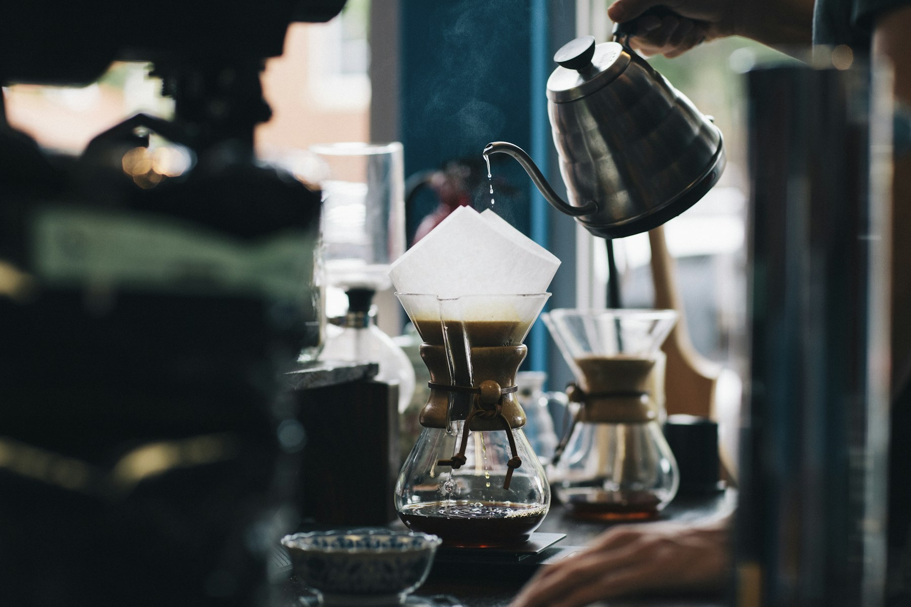
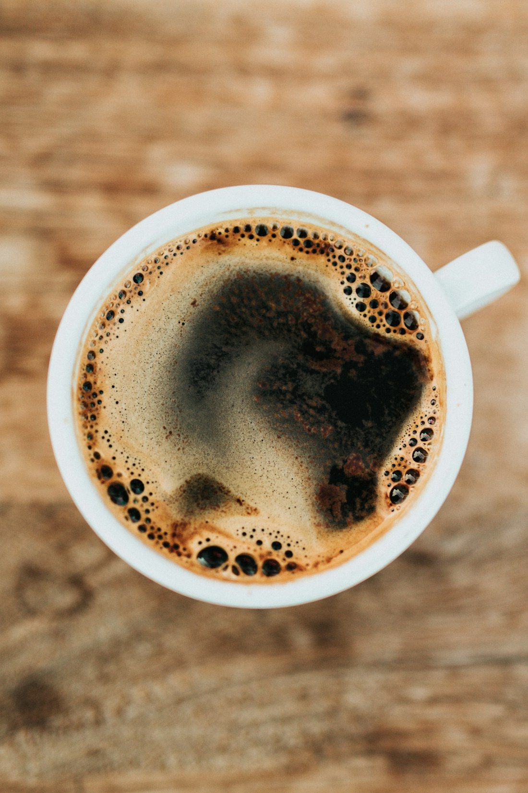
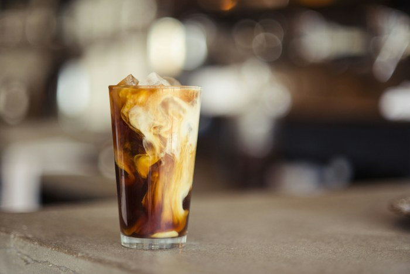

↖
↖از کدام قهوه شروع کنیم؟
اگر بین اسپرسو، لاته و قهوهٔ دمی ماندهای، این راهنمای کوتاه برای توست.

عطر قهوه، نور آرام و یک جای دنج.
گاهی برای بهتر شدن روز، همینها کافیست.
مکث، تصور ما از یک کافهٔ دوستداشتنی است؛ جایی برای ورق زدن چند صفحه کتاب، دیدن یک دوست قدیمی یا تماشای خیابان از پشت پنجره.
قهوه اینجا بهانه است. اصل ماجرا، وقتیست که برای خودت و آدمهای زندگیات کنار میگذاری.
داستان ما را بخوان
 از عطر اولین دانه
از عطر اولین دانه
اگر طعم نرم شیر و عطر قهوه را دوست داری، از یک لاته شروع کن. برای روزهای گرمتر، آیسلاته همان همراه آشناست، با حالوهوایی خنکتر.
قهوهٔ من کدام است؟↖اگر بین اسپرسو، لاته و قهوهٔ دمی ماندهای، این راهنمای کوتاه برای توست.
یک صبح آرام الزاماً وقت زیادی نمیخواهد؛ گاهی فقط به چند انتخاب کوچک نیاز دارد.

↖دو نوشیدنی خنک با دو روش تهیه و دو تجربهٔ متفاوت از قهوه.